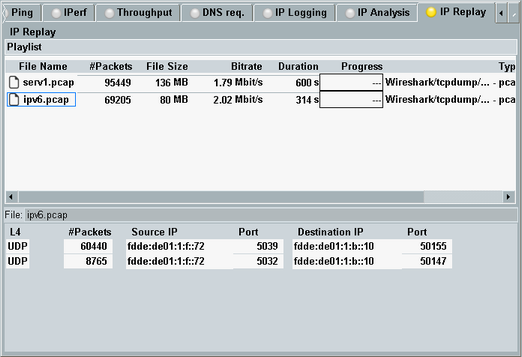
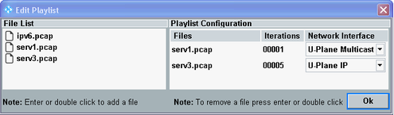

The "IP Replay" application allows you to replay previously captured IP traffic. This feature is, for example, useful for multicast tests. You record the multicast (for example a video stream) into a file and then replay it to the DUT.
The IP traffic must be captured into a PCAP file (packet capture file). You can use Wireshark for this purpose. The "IP Logging" application of the DAU also creates PCAP files.
You can replay a single PCAP file or several PCAP files in parallel. The traffic can be sent to the DUT or to the LAN DAU connector.
If you want to replay traffic to a DUT, establish a connection via a signaling application or a protocol test application, before proceeding.
To replay captured files, proceed as follows:
Store the files to the samba share of the DAU, into the folder ip_replay.
Press the "Edit Playlist" hotkey. Configure the playlist.
All files in the playlist are played simultaneously.
Start the "IP Replay" application.
If the playlist contains more than one file, sequentially select each file in the upper part of the tab. This triggers file analysis and display of the resulting information.
Wait until information is available for all files.
Press the "Play" hotkey to start the playlist.
The contents of the "IP Replay" tab and the related dialogs, softkeys and hotkeys are described below.

The upper part of the tab lists information about all files in the playlist. To derive this information, the application must analyze the files.
The first file is analyzed automatically when the "IP Replay" application is started. The other files are only analyzed if you select them in the list.
Analyzing a large file takes some time. Analyzing many large files in parallel can affect the performance of the DAU. The results of measurements running in parallel can be distorted.
- File name, number of IP packets in the file, file size, bit rate and duration of the file
- "Progress" displays a progress bar for each file, while the files are replayed.
- "Type" indicates the file type and information about the application used for capturing the file.
Only PCAP files can be replayed. If a different type is displayed, the file is no PCAP file, despite its PCAP file-name extension. - "Encapsulation" indicates whether the file contains raw IP traffic or IP traffic plus Ethernet headers.
The lower part of the tab lists all IP connections contained in the PCAP file that is selected in the upper part.
- The layer 4 protocol and the number of IP packets
- The IP address and port number of the sender (source) and of the recipient (destination) of the IP packets
The "Play" hotkey starts replaying the playlist. The "Stop" hotkey aborts replaying. It is not possible to pause and continue a replay.
The "Play" hotkey is only active if the "IP Replay" application is running and the playlist is not empty.
Remote command:The "Clear Playlist" hotkey is only active if the "IP Replay" application is switched off.
The hotkey removes all files from the playlist.
Remote command:The "Edit Playlist" hotkey is only active if the "IP Replay" application is switched off.
It opens a dialog for configuration of the playlist.

The left part lists all PCAP files stored in the directory ip_replay of the samba share.
The right part displays the playlist contents.
Double-click a file on the left to add it to the playlist. Double-click a file in the playlist to remove it from the list.
- "U-Plane IP": IP unicast traffic to the DUT
- "U-Plane Multicast": IP multicast traffic to the DUT
- "LAN-DAU": IP traffic to the LAN DAU connector
Turn the "IP Replay" application on or off using the [ON | OFF] or [RESTART | STOP] keys. Alternatively, right-click the "IP Replay" softkey.
The softkey shows the current state. Additional substates can be retrieved via remote control.
Remote command: